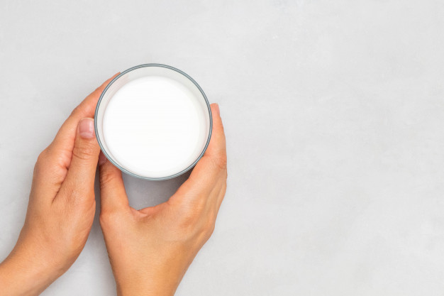

Що за звір – кефір?
Хто там?
У складі кефіру – до 50 різних видів молочнокислих бактерій, оцтовокислих бактерій, а також дріжджі (ви ж не боїтеся дріжджів? Якщо раптом так, то ось тут про них більше).
Найчастішими резидентами вашої склянки апетитного напою є Lactobacillus kefiranofaciens, L. kefiri, L. helveticus, Lactobacillus buchneri, Lactococcus lactis Acetobacter, Leuconostoc sp. Enterococcus sp., Sacharomyces cerevisiae, Dekkera anomalus.
У процесі виготовлення та зберігання кефіру розгортається справжня літописна історія: спочатку одні групи мікроорганізмів переважають, потім інші. Наприклад, на ранній стадії один із видів лактобацил (Lb. kefiranofaciens) кількісно переважає над усіма іншими, а вкінці "перемагають" леуконостоки(L. mesenteroides), які надають продукту більшої густоти та ароматності. Тому залежно від свого "віку", кефір може бути більш чи менш кислим, густим та ароматним.
Загадки мікробних "пірамід"
Ще одне чудо кефірної мікробіології – кефірне зерно. Воно має неправильну форму цвітної капусти, яка складається з численних порожнистих кулястих структур із діаметром 2-9 мм. Ці кульки утворюють багатогранну мережеву структуру. Їх матриця складається із екзополісахаридів (переважно – кефірану), а також із білків та залишків мікробних клітин.
Цікаво, що поки так і не вивчено механізм формування такого стабільного консорціуму, який зберігає свою функціональність нескінченно довго. І поки що всі спроби генерувати нове кефірне зерно при будь-якому бродінні сумішей чистих заквасок не увінчалися успіхом.
Наразі вважається, що молочнокислі та оцтовокислі бактерії відповідальні за продукцію полісахаридів і біоплівки, а дріжджі власне вибудовують цю складну сітку.
Бонуси співпраці
Кефір – доволі стабільна і сильна мікробна спільнота. І це забезпечується завдяки вельми ефективній співпраці її учасників.
Взаємодія кефірних мікроорганізмів між собою сприяє підвищенню їх стресостійкості та життєздатності. Наприклад, показано що S. cerevisiae (дріжджі) можуть істотно підвищувати життєздатність пробіотичного штаму Lb. rhamnosus HN001 в умовах підвищеної кислотності.
А бути разом для дріжджів (S. cerevisiae) і болгарської палички (Lb. delbrueckii) означає краще переносити такі негаразди і як низькі значення рН, і присутність у середовищі етанолу. Lb. kefiranofaciens у присутності дріжджів охочіше продукують свій "фірмовий" екзополісахарид кефіран.
Інший чудовий приклад допомоги один одному – утилізація молочної кислоти дріжджами. Ми знаємо, що молочнокислі бактерії з'їдають лактозу у молоці та продукують молочну кислоту (тому, власне, вони й мають таку назву – молочнокислі). Але по мірі накопичення в середовищі продуктів метаболізму, молочнокислим бактеріям поволі стає зле. Цікаво, що проблема навіть не в закисленні середовища, а саме в молочній кислоті, бо при експериментальному додаванні в середовище лужного розчину та корекції таким чином рН лактобацилам від того не легшало. Але тут їм на допомогу приходять дріжджі, які не вміють їсти лактозу, але можуть використовувати як джерело вуглецю – молекули лактату. Таким чином, концентрація молочної кислоти падає, молочнокислі бактерії знову в тонусі і далі розмножуються, і дріжджі при цьому також ситі. Зі свого боку, дріжджі ще й підкидають молочнокислим бактеріям смаколики – деякі вітаміни, фактори росту та незамінні амінокислоти . Особливо цікавим є те, що вони іноді це роблять лише в присутності один одного!
Інший приклад тісної та взаємовигідної співпраці – болгарська паличка і термофільний стрептокок, які знаходять спільну мову не лише у складі класичного йогурту, а й у кефірі – співпроживання разом, дозволяє їм легше та ефективніше споживати пептиди.
На перший погляд, це все схоже на ідилію, та іноді тут можуть розгортатися і майже свого роду політичні ігрища. Наприклад, Lb. kefiranofaciens охоче дружить і підтримує леуконостоки, і лактококи, але чомусь пригнічує іншу лактобацилу – L. kefiri.
Так само і деякі дріжджі лояльно ставляться до інших учасників спільноти, але бувають вороже налаштованими по відношенню до своїх родичів.
Кефір для нас
Красиві історії про життя кефірної мікроцивілізації – то добре і цікаво, але як в плані впливу кефіру на наш макроорганізм?
І тут наче все гарно.
Як і інші кисломолочні напої, кефір має значно меншу кількість лактози, ніж молоко. Тому він гарно переноситься людьми, які мають лактазну недостатність.
Широкий спектр органічних кислот, та бактеріоцини мають протимікробну активність по відношенню до широкого спектру патогенів – сальмонел, стафілококів, протеїв, лістерій і кандід. Деякі автори, оцінюючи отримані результати, навіть вважають їх порівнюваними із антибактеріальною дією пеніциліну чи гентаміцину!
Навіть розведений кефір пригнічує споруляцію пліснявих грибів – аспергіл (а відповідно і продукцію афлактосину), що дозволило використовувати цю чудову мікробну асоціацію як природний консервант. А органічні кислоти кефіру ще й переводять афлатоксин у менш токсичну форму. (Але, про всяк випадок – то не є закликом запивати цвілий хліб кефіром. Нагадуємо, що продукти із пліснявою взагалі не варто споживати в їжу!)
Дослідження на тваринах також показують, що споживання кефіру збільшує популяцію молочнокислих бактерій у кишковій мікробіоті і зменшує кількість ентеробактерій та клостридій.
Півтора місяці в режимі склянки кефіру щодня знижує запальні маркери у крові, підвищення яких, як відомо, має місце при багатьох хронічних хворобах.
Регулярне споживання кефіру гарно впливає на рівень цукру в крові і може бути корисним як додаткова терапія у запобіганню діабету (у дослідженнях позитивні ефекти спостерігалися при вживанні 600 мл продукту протягом 8 тижнів).
Кефір допомагає нашому кишківнику реактивніше позбавлятися від вчорашньої вечері (піддослідні, що вживали по 500 мл щодня упродовж місяця, відмітили істотне покращення симптомів закрепу).
А ще споживання кефіру може бути одним із профілактичних засобів проти розвитку карієсу. Регулярне вживання навіть невеликих кількостей кефіру (по 100 мл щодня впродовж двох тижнів) результувало у пригніченні розвитку стрептококів, помічених в каріозних ураженнях зубів.
Також дослідники відмічають, що регулярне споживання кефіру може знижувати ризики виникнення колореатального раку. У дослідах на тваринах споживання кефіру дещо знижувало ріст пухлин, підвищувало рівень імуноглобулінів А та допомагало відновленню слизової кишківника тварин після експериментального опромінення.
А як щодо намаститися кефіром після того, як перележали на сонці? Знову ж таки, в експерементах над тими бідолашними тваринами було показано, що кефір має непогані загоюючі та протимікробні властивості по відношенню до шкіри. Однак на сонці ліпше ж таки не смажитися.
Чого робити не варто?
Кефіру нерідко приписують трохи магічні властивості в плані схуднення. І справді, якщо у своєму раціоні бургер замінити на кефір, то магія відбудеться. Однак не варто надто захоплюватися і влаштовувати собі розвантажувальні дні на кефірі!
І кефір, і шлунковий сік мають низьке значення рН. Не отримуючи іншої їжі, наш бідний голодний шлунок ще більше продукує соку і перетравлює свою власну слизову оболонку. Вона, звісно, намагається відновлюватися, однак радощів від того не так багато. Звісно, ви схуднете, однак ще й за рахунок того, що їсти нічого не зможете.
Тому, як то кажуть, споживаймо відповідально і нехай пребуде з вами кефірний дзен!
